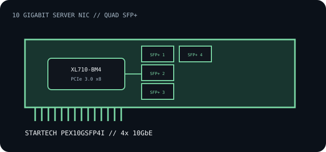

[ INDIVIDUAL COMPONENT // EXPANSION CARDS ]
StarTech PEX10GSFP4I
Quad-port 10 Gigabit SFP+ PCI Express adapter using an Intel XL710 family controller. Each link requires compatible SFP+ media or a supported direct-attach cable.

IDENTIFICATION: PEX10GSFP4I is the quad-port adapter. Do not confuse it with StarTech's similarly named one- or two-port cards. Match product label, board revision and driver before firmware changes.
Specifications and compatibility
| Exact model / controller | StarTech PEX10GSFP4I; Intel XL710-BM4 Ethernet controller. |
|---|---|
| Bus / host interface | PCI Express 3.0 x8. Confirm x8 electrical lanes and slot spacing/airflow in the host manual. |
| Ethernet standards / rates | Four 10GbE SFP+ ports for compatible 10GBASE-R optics or DAC media; nominal line rate is per port. Fiber reach and wavelength follow the selected transceiver. |
| Ports / connectors | Four SFP+ cages, with no optics supplied as part of the bare adapter. Each cage is a separate link; use qualified optics or DACs and supported combinations. |
| OS / driver compatibility | StarTech publishes model-specific Windows and Linux driver resources; exact Windows client/server and Linux kernel support depends on the release. Check the product downloads and XL710 driver notes for the installed OS. |
| Revision / host caveat | Record adapter SKU, PCI subsystem ID, firmware/NVM, driver and transceiver part numbers. Verify PCIe x8 wiring, server airflow, bracket height and the vendor's supported optics list. |
Installation and archival notes
- Use a PCIe 3.0 x8-capable slot and provide airflow around the controller/heatsink under sustained load.
- Verify optical type, wavelength, fiber mode, polarity, link partner and FEC requirements before connecting each port.
- Record firmware and driver revisions; do not apply a different vendor's XL710 NVM image to this board.
Manufacturer and manual sources
- StarTech.com — PEX10GSFP4I product informationFour-port 10GbE product identity, interface and controller-family specifications.
- StarTech PEX10GSFP4I quick-start manualInstallation instructions and hardware configuration reference.
- StarTech.com — drivers and downloadsSearch by exact SKU for supported OS packages and current revisions.